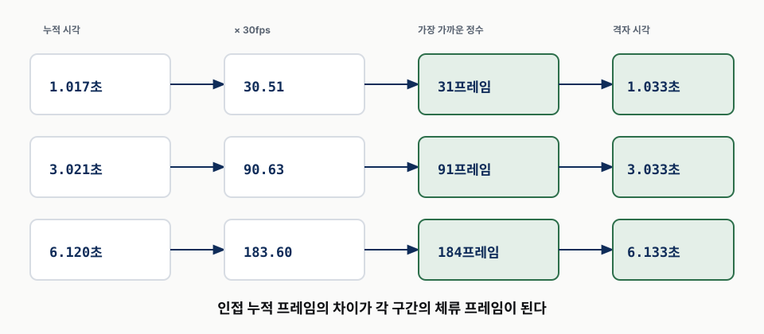
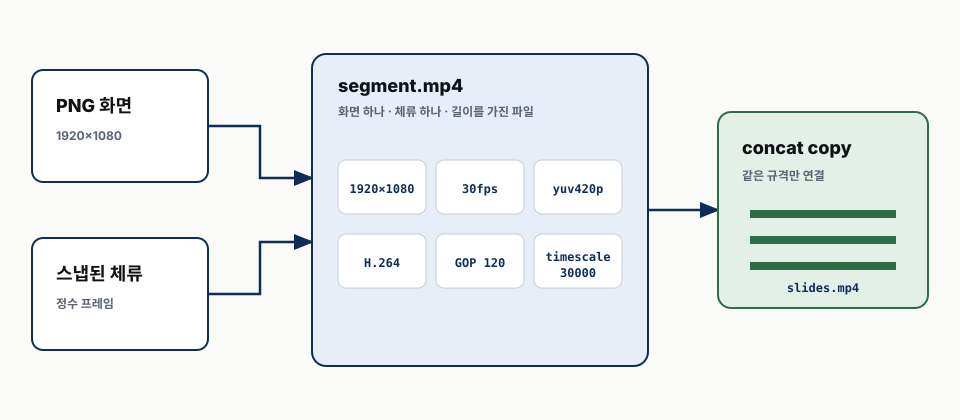
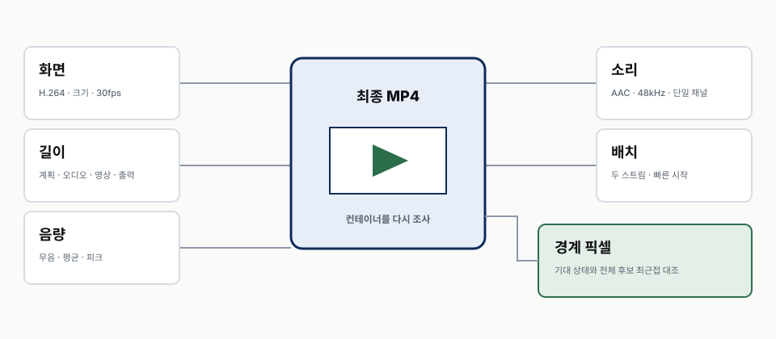
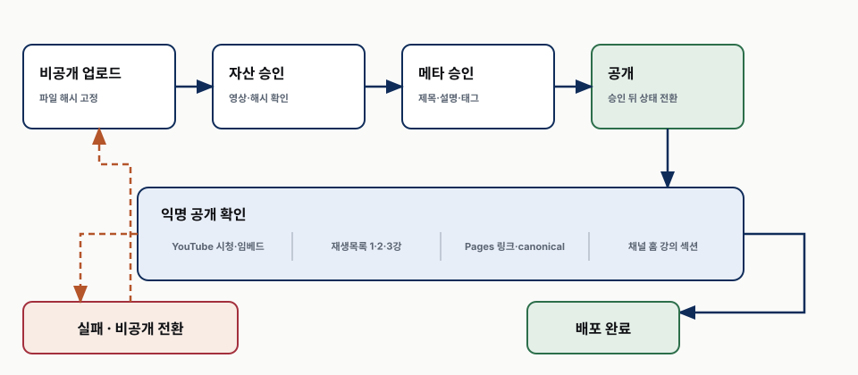

강의 상세 리포트
강의 영상을 조립하고 검증하기
실측 시간·누적 프레임 격자·세그먼트 조립으로 끝까지 어긋나지 않게 만들기
요약
조립은 파일을 잇는 일이 아니라 시간 계약을 보존하는 일이다
2강이 넘긴 것은 슬라이드마다 검증된 문단 오디오, 문장 시작 시각, 드러내기 프레임 계획이다. 3강은 이 세 입력의 경계를 영상의 30프레임 격자에 옮긴다. 여기서 오디오의 길이를 글자 수로 추정하거나 구간마다 따로 반올림하면 작은 차이가 뒤쪽으로 누적된다.
이 차시가 답하는 것
| 질문 | 답이 있는 곳 |
|---|---|
| 왜 짧은 반올림 오차가 영상 뒤쪽에서 커지는가 | s1 |
| 타임라인은 어떤 실측값으로 만드는가 | s2 |
| 30프레임 격자에는 어떻게 오차를 쌓지 않고 맞추는가 | s3 |
| 정지 화면은 어떤 단위로 인코딩하고 이어 붙이는가 | s4 |
| 최종 MP4에서 무엇을 다시 재는가 | s5 |
| NAS가 빠진 상태의 잘못된 쓰기를 어떻게 막는가 | s6 (심화) |
| 어떤 해시가 있고 어떤 해시가 아직 없는가 | s7 (심화) |
| 승인 전 영상 ID와 원장을 어디에 두는가 | s8 (심화) |
| 공개 뒤 익명 확인과 롤백은 어떻게 닫는가 | s9 (심화) |
전체 흐름
| 단계 | 입력 | 출력 | 실패 관문 |
|---|---|---|---|
| 측정 | 검증된 문단 WAV | 실제 초 단위 길이 | 파일·정렬 누락, 비단조 시작 |
| 시간 계획 | 시작 시각·프레임 단계 | 단계별 체류 시간 | 오디오 밖의 시작, 음수 구간 |
| 격자 스냅 | 누적 체류 시간 | 30프레임 경계 | 총 오차가 한 프레임 이상 |
| 세그먼트 | 1920×1080 정지 프레임 | 같은 코덱의 MP4 조각 | 규격·프레임률 불일치 |
| 조립 | 영상 조각·문단 오디오 | 최종 MP4 | A/V 길이·경계 불일치 |
| 공개 | 승인된 비공개 영상 | 공개 영상·Pages 링크 | 익명 접근·임베드 실패 |
핵심 본편(core) 은 s0부터 s5까지다. 실측 시간에서 타임라인을 만들고, 누적 프레임 격자에 맞춘 세그먼트를 조립한 다음 최종 파일을 다시 확인한다.
심화 부록(deep) 은 s6부터 s9까지다. 대용량 산출물을 안전하게 보관하고, 해시와 승인 원장을 연결하며, 공개 확인과 롤백까지 운영 경계를 닫는다.
작은 반올림이 누적 어긋남이 된다
시작이 맞는다고 끝도 맞는 것은 아니다
30프레임 영상에서 한 프레임은 약 0.033초다. 한 체류 시간을 프레임 수로 바꾸면 대개 딱 나누어떨어지지 않는다. 매 구간을 독립적으로 반올림하면 각각은 한 프레임보다 작은 오차처럼 보이지만, 오차가 같은 방향으로 몰릴 때 전체 타임라인은 계속 밀린다.
실제 회귀 테스트에는 20.017초 구간을 73번 반복하는 사례가 있다. 개별 구간을 따로 반올림했던 경로에서는 전체가 2.733초까지 벌어졌다. 이 수치는 보편적인 오차 크기가 아니라, 같은 방향의 작은 오차가 충분히 반복되면 시청자가 느낄 만큼 커진다는 재현 사례다.
증상과 원인을 분리한다
| 보이는 증상 | 흔한 오진 | 실제로 먼저 볼 것 |
|---|---|---|
| 뒤쪽에서 말이 화면보다 먼저 시작한다 | 특정 슬라이드 전환 오류 | 앞 구간 반올림의 누적합 |
| 마지막 화면이 오래 남는다 | 끝 여백 설정 | concat 목록의 마지막 파일 중복 |
| 영상이 오디오보다 짧다 | 오디오 합성 문제 | 이미지 duration 적용 방식 |
| 최종 길이는 맞지만 중간이 어긋난다 | -shortest가 해결했다고 판단 |
각 드러내기 경계의 실제 프레임 |

-shortest는 두 스트림 가운데 짧은 쪽에서 출력을 끝낼 뿐이다. 중간 경계가 맞다는
증거가 아니다. 총 길이는 맞으면서 중간 화면이 한 문장씩 밀릴 수 있으므로, 경계 검증은
별도로 필요하다.
실패했던 세 가지 이미지 concat 방식
정지 이미지 목록의 duration에 의존한 경로는 세 번 서로 다른 방식으로 어긋났다.
| 방식 | 관측된 결과 | 판단 |
|---|---|---|
| 마지막 파일 되풀이 없음 | 14.49초 부족 | 마지막 이미지의 지속 시간이 보존되지 않음 |
| 마지막 파일 되풀이 | 20.1초 초과 | 마지막 화면이 한 번 더 붙음 |
| 되풀이와 출력 길이 제한 | 예상과 다른 지점에서 잘림 | 프레임률 재타이밍과 길이 제한이 섞임 |
따라서 정지 이미지는 목록에서 길이를 지시하지 않는다. 각 화면이 자신의 길이를 가진 영상 세그먼트가 되게 한 뒤 세그먼트 파일만 이어 붙인다.
타임라인은 실측 오디오에서 시작한다
원장의 길이도 다시 믿지 않는다
대본 글자 수에 평균 발화 속도를 곱하면 전체 작업 시간은 추정할 수 있지만, 개별 문단
길이를 정할 수는 없다. 같은 글자 수라도 쉼, 숫자, 영문, 문장 구조에 따라 실제 음성
길이가 달라진다. 영상 조립기는 각 WAV를 ffprobe로 다시 재고 그 값을 타임라인의
끝 경계로 사용한다.
입력은 세 묶음이다.
| 입력 | 필요한 값 | 검증 |
|---|---|---|
| 생성 원장 | 슬라이드 ID, 검증 통과 여부 | 하나라도 미검증이면 중단 |
| 정렬 원장 | 문장 시작 시각 | 단조 증가, 오디오 길이 안 |
| 프레임 명세 | 슬라이드별 화면 단계 수 | 모든 단계의 PNG 존재 |
단계 체류 시간
문장 시작 시각이 0, 4, 9초이고 문단 오디오가 15초, 다음 장 전 쉼이 0.45초라면 세
화면의 체류 시간은 4, 5, 6.45초다. 마지막 화면이 문단 끝과 쉼을 함께 붙잡으므로
음성이 끝나기 전에 화면이 먼저 넘어가지 않는다.

표지나 절 구분처럼 화면 단계가 하나뿐인 장은 문장이 여러 개여도 첫 시작 시각만 쓴다. 반대로 필요한 단계보다 시작 시각이 부족하거나 마지막 시작이 오디오 끝을 넘으면 조립을 중단한다.
2강 산출물의 실제 규모
2강 원장과 실제 빌드 타임라인에는 47문단, 오디오 724.48초, 전체 화면 상태 138개가 기록돼 있다. 고유 상태 수는 계산하거나 기록하지 않았다. 최종 영상은 문단 사이 0.45초와 마지막 1.20초 여백을 포함해 746.367초다. 이 값은 3강의 목표값이 아니라 동일한 조립 계약이 실제 산출물에 적용된 선행 사례다.
개별 구간이 아니라 누적 시각을 스냅한다
올바른 반올림 단위
오디오 시간은 연속값이고 영상은 프레임 격자다. 구간 h1, h2, h3을 각각 반올림하지
않고, 먼저 누적 시각 t1=h1, t2=h1+h2, t3=h1+h2+h3을 만든다. 각 t를 가장
가까운 프레임 번호로 바꾼 뒤 인접 프레임 번호의 차이를 다시 구간 길이로 되돌린다.
연속 체류 시간 → 누적 시각 → 누적 프레임 번호 → 프레임 차이 → 스냅된 체류 시간
이 방법은 어느 구간이 한 프레임 길어지면 다음 구간이 그 차이를 흡수하게 한다. 전체 오차는 반복 횟수와 무관하게 한 프레임보다 작게 유지된다.
30프레임 격자 예
| 누적 시각 | 30을 곱한 값 | 선택한 누적 프레임 | 격자 시각 |
|---|---|---|---|
| 1.017초 | 30.51 | 31 | 1.033초 |
| 3.021초 | 90.63 | 91 | 3.033초 |
| 6.120초 | 183.60 | 184 | 6.133초 |

표의 각 구간만 보면 위아래 반올림이 섞인다. 중요한 검사는 마지막 누적 시각과 마지막 프레임 시각의 차이가 한 프레임 미만인지다. 모든 스냅된 체류 시간도 프레임 수로 환산했을 때 정수여야 한다.
두 총합을 함께 남긴다
타임라인 원장에는 스냅 전 계획 길이, 오디오 합본 길이, 영상 세그먼트 합본 길이, 최종 출력 길이를 함께 둔다. 하나의 최종 길이만 남기면 어느 단계에서 차이가 생겼는지 찾을 수 없다.
정지 화면을 동일 규격 세그먼트로 만든다
각 파일이 자신의 길이를 갖게 한다
각 1920×1080 PNG를 정확한 체류 시간만큼 반복 입력해 H.264 세그먼트 하나로 만든다. 모든 세그먼트는 같은 생성 함수와 같은 설정을 사용한다.
| 설정 | 현재 값 | 이유 |
|---|---|---|
| 해상도 | 1920×1080 | 영상 마스터 크기 |
| 프레임률 | 30fps | 타임라인 격자와 일치 |
| 픽셀 형식 | yuv420p | 일반 재생기 호환 |
| 비디오 코덱 | H.264 | 공개 플랫폼 호환 |
| GOP | 120프레임 | 세그먼트 사이 일관된 설정 |
| 타임스케일 | 30000 | 30fps 시간축 고정 |
concat copy로 잇는다. 영상 조립기에서 직접 작도, 2026-08-23.
설정이 같아야 세그먼트를 다시 인코딩하지 않고 concat demuxer와 -c copy로 붙일 수
있다. 목록에는 파일 경로만 한 줄씩 쓰고 duration은 쓰지 않는다.
오디오도 파일 경계로 잇는다
오디오는 검증된 문단 WAV 사이에 0.45초 무음 WAV를 넣고 마지막에 1.20초 여백을 둔다. 페이드 필터로 문단 꼬리를 자르지 않는다. 목록의 파일 수와 예상 문단·무음 수가 맞는지 확인한 뒤 PCM을 그대로 합친다.
메모리 사고를 구조로 막는다
디코딩하는 ffmpeg 작업은 사용자 cgroup에서 메모리 8GB, 스왑 0으로 제한한다.
trim, atrim, 복잡한 필터 그래프를 쓰지 않는다. 과거 필터 경로가 41GB까지 커져 같은
작업 범위의 세션을 함께 종료한 사고가 있었기 때문이다. 세그먼트 파일은 느리지만 실패
범위가 작고 재개 지점을 파일 단위로 확인할 수 있다.
최종 MP4를 다시 측정하고 경계를 본다
조립 명령이 성공했다는 것은 충분하지 않다
최종 파일에서는 컨테이너, 비디오, 오디오를 다시 조사한다.
| 범주 | 확인할 값 |
|---|---|
| 화면 | H.264, 1920×1080, 30fps, yuv420p |
| 소리 | AAC, 48kHz, 단일 채널 |
| 길이 | 계획·오디오·영상·최종 출력 사이 차이 |
| 배치 | 빠른 시작 메타데이터, 비디오와 오디오 스트림 존재 |
| 음량 | 긴 무음, 과도한 피크, 비정상적으로 낮은 평균 |

총 길이 뒤에 숨은 경계를 검증한다
각 드러내기 전환 직후의 프레임을 최종 MP4에서 뽑는다. 그 이미지를 렌더 단계에서 만든 전체 후보 프레임과 비교하고, 가장 가까운 후보가 타임라인이 기대한 슬라이드와 단계인지 확인한다. 이 검사는 총 길이가 맞아도 중간 화면이 밀린 경우를 잡는다.
2강 원장의 오디오 724.48초에 문단 사이 쉼 46회와 마지막 1.20초를 더하면 예상 합본은 746.38초다. 원장에 기록된 최종 영상 746.367초와 단순 비교한 차이는 0.013초다. 원장은 프레임 후보가 138개였다는 사실까지 기록하지만, 각 경계의 최근접 비교 통과 수는 남기지 않았다. 따라서 여기서는 총 길이 산술까지만 재검증됐다고 판단하고 경계 통과를 단정하지 않는다.
마지막은 실제 재생이다
자동 검사가 통과해도 1920×1080 최종 표시 크기로 시작부터 끝까지 본다. 글자 잘림, 전환 속도, 문단 사이 쉼, 음성과 현재 강조의 관계를 확인한다. 한 장에서 결함을 찾으면 같은 레이아웃을 쓰는 형제 장의 경계도 함께 본다.
아카이브 가드가 잘못된 디스크 쓰기를 막는다
경로 존재만 확인하면 부족하다
NAS 마운트가 빠지면 마운트 지점 디렉터리는 로컬 디스크에 그대로 남을 수 있다. 경로가 있다는 이유만으로 대용량 영상을 쓰면 NAS가 아니라 루트 디스크를 채운다. 그래서 아카이브 루트는 환경변수로 주입하고, 쓰기 전에 네 조건을 확인한다.
| 가드 | 실패하면 뜻하는 것 |
|---|---|
| 절대경로 | 상대경로로 저장 위치가 흔들림 |
| 공유 안의 표식 파일 | 마운트가 빠졌거나 다른 경로임 |
| 예상 파일시스템 | NAS가 아닌 로컬 파일시스템일 수 있음 |
| 최소 2GiB 여유 | 생성 도중 공간 부족 위험 |

저장소에는 실제 아카이브 절대경로를 기록하지 않는다. 코스 ID, 차시 ID, 산출물 종류만으로 상대 배치를 계산한다.
보관할 것과 재생성할 것을 나눈다
검증된 WAV, 생성·정렬 원장, 최종 MP4는 아카이브에 둔다. 프레임 PNG와 세그먼트 중간물은 HTML과 오디오에서 다시 만들 수 있으므로 로컬 스크래치에 둔다. 수백 개의 작은 파일을 네트워크 공유에 직접 쓰면 느리고 중단 때 부분 파일이 남기 쉽다.
해시는 연결하고 공백은 숨기지 않는다
현재 원장이 증명하는 연결
2강 산출물 원장에는 다음 식별자가 있다.
| 식별자 | 답하는 질문 |
|---|---|
| 콘텐츠 리비전 | 어떤 강의 정본에서 시작했는가 |
| 스크립트 리비전 | 어떤 전체 대본을 읽었는가 |
| 문단 스크립트 해시 | 이 문단 텍스트가 같은가 |
| 문단 오디오 해시 | 이 WAV가 당시 검증본과 같은가 |
| 최종 영상 해시 | 이 MP4가 조립·검증한 파일과 같은가 |
이 연결로 대본을 고친 뒤 예전 오디오를 쓰는 오류와, 전송 중 영상이 바뀐 오류를 잡을 수 있다.
아직 없는 연결
현재 원장에는 아웃라인 전체 해시와 프레임 명세 해시가 없다. 따라서 콘텐츠 리비전과 스크립트는 같지만 화면 아웃라인만 바뀐 경우, 최종 영상이 낡았는지를 원장만으로 완전히 증명할 수 없다. 이 공백을 이미 닫았다고 쓰지 않는다.

현재 관문은 프레임 수·해상도·최종 영상 해시와 실제 경계 비교로 보완한다. 다음 개선에서는 덱 리비전 또는 아웃라인 해시와 프레임 명세 해시를 원장에 추가해, 화면 정본에서 최종 MP4까지의 연결을 결정론적으로 닫아야 한다.
승인은 비공개 원장에서 공개 순서로 흐른다
공개 ID를 먼저 만들지 않는다
영상은 먼저 비공개 또는 일부 공개 상태로 업로드하고, 소유자 전용 미디어 원장에 정확한 영상 ID와 파일 해시, 콘텐츠·스크립트 리비전을 연결한다. 공개 저장소에는 승인 전 영상 ID를 넣지 않는다.
최종 MP4 해시 → 비공개 업로드 → 자산 승인 → 메타데이터 승인 → 공개 전환 → Pages 연결
자산 승인과 메타데이터 승인을 나누는 이유는 파일이 맞는지와 제목·설명·태그·공개 범위가 맞는지가 서로 다른 판단이기 때문이다. 승인 토큰은 대상 해시와 연결되어야 하며, 파일이나 메타데이터가 바뀌면 예전 승인을 재사용하지 않는다.
코스 순서를 보존한다
이 코스는 1강 내레이션 생성, 2강 화면 동기화, 3강 영상 조립 순서다. 3강을 먼저 공개하면 선행 입력을 설명하는 2강이 비어 있게 된다. 따라서 2강을 먼저 게시하고 같은 코스 재생목록에 3강을 뒤이어 넣는다.
익명 공개 확인과 롤백으로 배포를 닫는다
로그인한 소유자 화면은 공개 증거가 아니다
공개 전환 뒤에는 쿠키 없는 요청으로 YouTube 시청 페이지와 Pages 차시 페이지를 다시 연다. Pages에서는 영상 임베드, 상세 리포트, 발표자료, 코스 소개 링크가 모두 익명으로 열리는지 확인한다. 채널에서는 코스 재생목록 순서와 홈의 강의 섹션 노출을 확인한다.
| 공개 확인 | 실패 시 조치 |
|---|---|
| 시청 페이지 익명 접근 | 공개 범위 되돌리고 원장 확인 |
| 임베드 재생 가능 | 임베드 정책·영상 상태 확인 |
| 코스 재생목록 순서 | 1·2·3강 순서 재배치 |
| Pages 링크 200 응답 | 공개 저장소 링크 수정·재배포 |
| 리포트·슬라이드 canonical | 잘못된 URL 수정 |

롤백은 삭제보다 먼저 비공개 전환이다
공개 뒤 결함을 찾으면 우선 영상을 비공개로 되돌리고 Pages의 영상 링크를 제거하거나 검토 상태로 돌린다. 삭제는 영상 ID와 감사 연결을 끊으므로 복구 불가능한 결함일 때만 별도 승인으로 한다. 수정본은 새 해시와 새 승인 기록을 받아 다시 공개한다.
용어
| 용어 | 이 차시에서의 뜻 |
|---|---|
| 체류 시간 | 한 화면 상태가 유지되는 초 단위 길이 |
| 누적 시각 | 첫 프레임부터 현재 경계까지의 전체 시간 |
| 프레임 스냅 | 연속 시간을 가장 가까운 영상 프레임 경계로 옮기는 일 |
| 세그먼트 | 한 정지 화면과 한 체류 시간을 가진 짧은 MP4 |
| 경계 검증 | 최종 MP4에서 전환 직후 픽셀이 기대 프레임인지 대조하는 일 |
| 자산 승인 | 업로드할 영상 파일과 해시가 맞다는 승인 |
| 메타데이터 승인 | 제목·설명·태그·공개 범위가 맞다는 승인 |
근거 지도
| 근거 | 확인한 계약 |
|---|---|
| 영상 조립기 | 실측 WAV, 단계 체류, 누적 스냅, 세그먼트 concat, 최종 mux |
| 타임라인 테스트 | 30fps 경계, 누적 오차, 단조 증가, 이미지 duration 금지 |
| 아카이브 가드 | 환경변수, 표식, 파일시스템, 여유 공간, 안전한 ID |
| 2강 산출물 원장·타임라인 | 47문단, 전체 화면 상태 138개, 724.48초 오디오, 746.367초 영상과 해시. 고유 상태 수는 기록하지 않음 |
| 2강 원장 산술 | 724.48 + 46×0.45 + 1.20 = 746.38초, 영상과 단순 차이 0.013초 |
| 운영 규칙 | 비공개 우선, 소유자 원장, 승인 뒤 공개, 익명 확인 |
수치와 실패 사례는 2026-08-23 현재 저장소의 구현·회귀 테스트·2강 원장을 기준으로 확인했다. 보편적인 플랫폼 성능이나 학습효과를 주장하지 않는다.
공개 전 체크리스트
- [ ] 모든 문단 WAV가 검증 상태이고 실제 길이를 다시 측정했다.
- [ ] 문장 시작 시각이 단조 증가하며 오디오 길이 안에 있다.
- [ ] 모든 드러내기 단계의 1920×1080 프레임이 존재한다.
- [ ] 누적 프레임 스냅의 총 오차가 한 프레임보다 작다.
- [ ] 세그먼트 규격이 같고 concat 목록에
duration이 없다. - [ ] 최종 MP4의 스트림·길이·음량·경계 프레임을 다시 확인했다.
- [ ] 아카이브 표식·파일시스템·여유 공간을 확인했다.
- [ ] 콘텐츠·스크립트·문단 오디오·최종 영상 해시를 원장에 남겼다.
- [ ] 자산과 메타데이터 승인을 각각 받았다.
- [ ] 2강 다음에 3강을 공개하고 재생목록 순서를 확인했다.
- [ ] 쿠키 없는 환경에서 YouTube와 Pages 링크를 확인했다.
- [ ] 실패 시 비공개 전환과 Pages 링크 제거 순서를 준비했다.